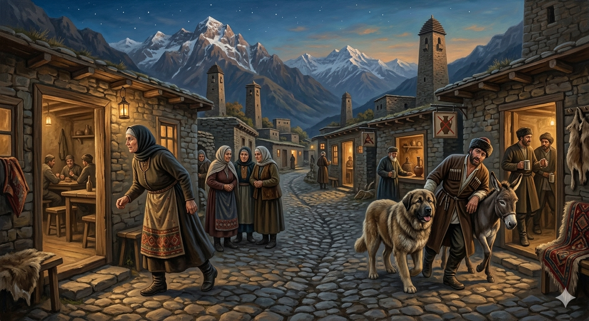

И.А. Дахкильгов. Хьехаме дувцарш - поучительные рассказы-притчи.
И.А. Дахкильгов. Хьехаме дувцарш - поучительные рассказы-притчи. Из ингушского фольклора.

Харшанешка лел ер
Шийна хьакхаштагӀа болча уццӀаьшта ший сесагах леткъав цхьа къонах: - ХӀара денна укх йоккхача шахьара гӀолла лелаш, цхьанна харшаке, закусочни, кафе тӀех ца юташ, царна чулелхаш, чӀоагӀа хьаьръяьнна лел из шун йоӀ-йиша. - Аь-аьъ! - оалаш, цецбаьннаб уццӀай, - тхона вӀалла хеза а дий тха Напсатах пьяница хинналга! - А, а, - аьннад найцо, - из-м, кхыметтале, малара хьадж а ловш яц. Цу харшанешкеи, ресторанашкеи, кхычахьеи со лехаш лелаш хул из. Иштта хул маларашта тӀехьабаьннача наьха дезала гӀулакхаш.
РУССКИЙ
Она ходит по харчевням
Некий мужчина пожаловался родственникам своей жены: - Совсем взбесилась ваша сестра. Каждый день ходит по всему этому большому городу и не пропускает ни одной харчевни, закусочной, кафе, чтобы не наведаться в них. - Как так, - удивились родственники жены, - разве когда-нибудь и кто-нибудь сказал, что наша Напсат пьяница!? - Нет, нет, - поспешно ответил зять, - она не выносит даже запаха спиртного. Это она в харчевнях, ресторанах и других местах постоянно ищет меня. Такими бывают у пьяниц семейные дела.
ENGLISH
She goes round the pubs
A man complained to his wife's relatives: 'Your sister has completely lost her mind. Every day she wanders all over this big city and doesn't miss a single pub, snack bar or café without popping in.' 'How can that be?' asked his wife's relatives in surprise. 'Has anyone ever said that our Napsat is a drunkard?' 'No, no,' replied the son-in-law hastily, 'she can't even stand the smell of alcohol. It's just that she's constantly looking for me in pubs, restaurants and other places.' Such are family affairs amongst drinkers.
НОХЧИЙН
ПОГОВОРКИ
Божа уст лургбоацачо беттача Ӏаттах ваьккхав. - При пахоте не помогший (кому-то) своим быком лишил (просившего) дойной коровы.Гайна-ганза бакъдар тӀадаланза дусаргдац. Фу пайда ба мичча ханна из тӀадаьннадар, аьнна? - Рано или поздно, правда выйдет наружу. А какой толк, что она когда-то выйдет?Дог доаге а безам тол. - Хоть и горит сердце, а любовь желанна.Чагаргаш яьнна корта кӀома ца белча Ӏергбац. - Плешивая голова не может не чесаться.“Ӏоэккха” аьнначун йийнаяц фоарт, Ӏоийккхачун йийнай. - Шею сломал не тот, кто сказал “прыгай”, а тот, кто прыгнул.Воча дешо берза йорт йихьай. - Плохое слово волчьей рысью бежит.КӀай яр, аьнна, Ӏаьржа яр, аьнна, хьакха ше маярра хьакха я. - Что белая, что черная – свинья, она и есть свинья.Тарамий барт хуле, заохалол хургда. - Если двойники-духи сговорятся, то свадебный сговор состоится.Хьаьр кхера а сихагӀа мел кхест сихагӀа кхоачалу. - Чем дольше жернов крутится, тем быстрее стирается.Истара фоарт санна чӀоагӀа я эхь доацача сага бат. - Лицо бессовестного человека каменно, как шея быка.